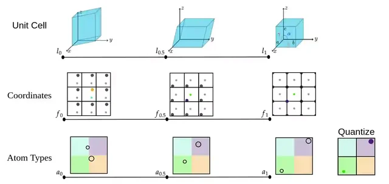
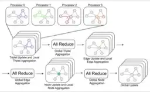
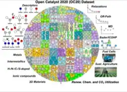
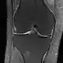
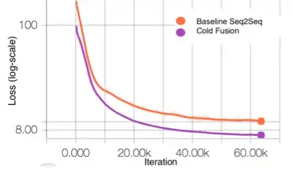
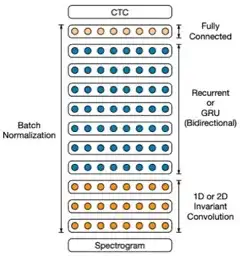

Anuroop Sriram
Founding AI Research Scientist, Prometheus
I build AI foundation models, with a focus on using them to accelerate science and engineering. I am a founding AI Research Scientist at Prometheus, where we are building the Artificial General Engineer — AI systems that change how the physical world is designed and engineered.
Before Prometheus, I was a technical lead in the FAIR Chemistry team at Meta, where I worked on universal machine-learning interatomic potentials (UMA), generative models for materials (FlowLLM, FlowMM), and some of the largest open datasets in the field — including Open Catalyst and Open DAC. I helped build the fairchem library and developed Graph Parallelism, the distributed-training method behind today's largest interatomic potentials, used to train models like UMA at billion-parameter scale.
I also led fastMRI, a collaboration between Meta and NYU Langone to accelerate MRI using deep learning. fastMRI methods deliver up to 4× faster scans with no loss in diagnostic accuracy and are now deployed in clinical MRI systems worldwide.
Earlier, I built and led the speech team at Meta FAIR, where we trained some of the first multi-billion-parameter speech models and developed self-supervised methods that shipped to billions of users across Meta's products. Before that, at Baidu, I co-created Deep Speech 2, one of the first end-to-end neural speech recognition systems.
I hold a Master's in Language Technologies from Carnegie Mellon University.
Selected Publications
-

-
FlowMM: Generating Materials with Riemannian Flow MatchingInternational Conference on Machine Learning (ICML) 2024
-

-
Towards Training Billion Parameter Graph Neural Networks for Atomic SimulationsInternational Conference on Learning Representations (ICLR) 2022
-

-
Open catalyst 2020 (OC20) dataset and community challengesACS Catalysis
-
End-to-end variational networks for accelerated MRI reconstructionInternational Conference on Medical Image Computing and Computer-Assisted Intervention (MICCAI) 2020
-

-
fastMRI: A publicly available raw k-space and DICOM dataset of knee images for accelerated MR image reconstruction using machine learningRadiology: Artificial Intelligence
-

-
Cold Fusion: Training Seq2Seq Models Together with Language ModelsInterspeech 2018
-

-
Deep speech 2: End-to-end speech recognition in english and mandarinInternational Conference on Machine Learning (ICML) 2016